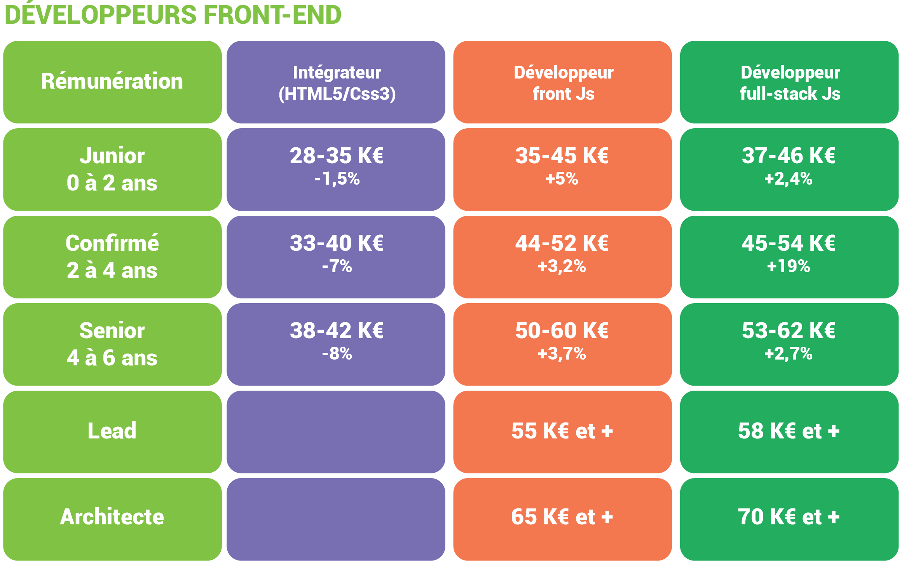
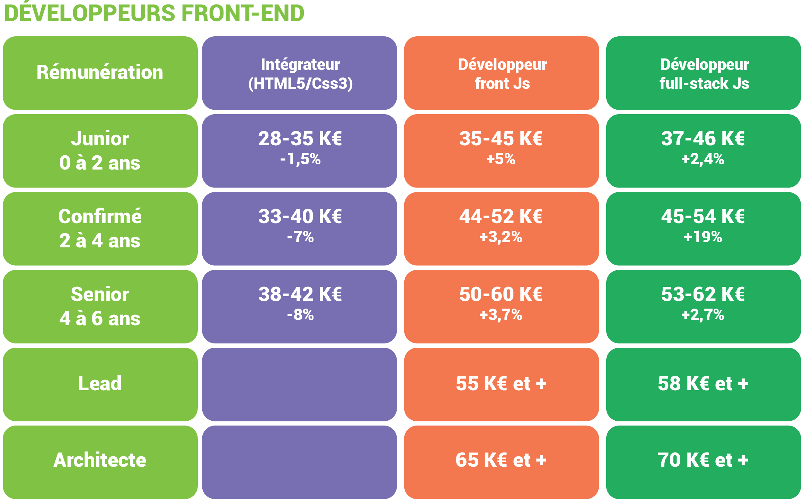

- Développeur web
- INFO WEB (6mois)
- Maîtriser l'utilisation des logiciels de production et d'intégration multimédiaSavoir développer et sécuriser un site Web dynamiqueÊtre capable de ...
-
485 heures
24/11/2021
Prochaine session à partir du 23/03/2022
- Développeur web
- ALT RH CONSULTING
- Formation Web designer, mettez votre coté créatif en lumière, utilisation du code CSS / HTML, des compétences en graphiste serait un plus.
-
312 heures
24/11/2021
Prochaine session à partir du 23/03/2022
- Développeur web
- DORANCO ESPACE MULTIMEDIA (DORANCO) - PARIS 20E
- Maîtriser l'utilisation des logiciels de production et d'intégration multimédiaSavoir développer et sécuriser un site Web dynamiqueÊtre capable de ...
-
heures
24/11/2021
Prochaine session à partir du 23/03/2022
 
